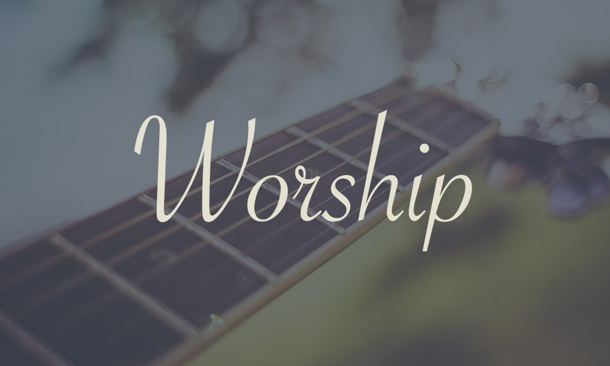
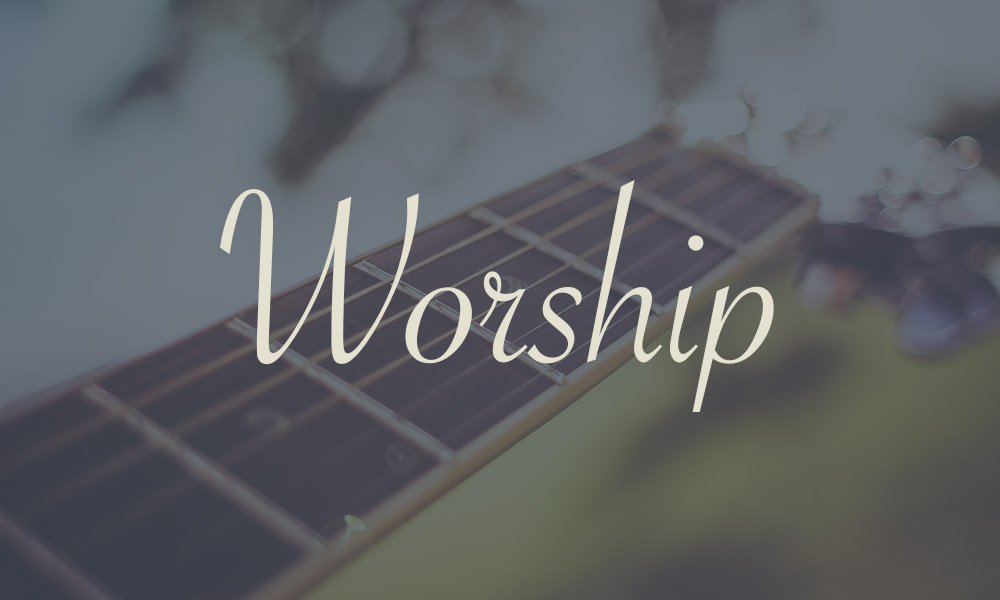

Oftentimes, people misconstrue singing for praises. Praises can only flow from the heart full of understanding and gratitude for who God is and not what He has done. God informs the need to create a platform for the Evolution of True Worshippers.
Luke 17:17 Worship Revolution is borne out of a passion to set platform inspired by God to bring about an evolution of true and spirit-filled worshippers. God more than ever seeks true worshippers (John 4:23-24). This is not a show or the usual praise night organised for sensational purposes. It is going to serve as an outreach to reach the unsaved for the purpose of salvation and as a medium to further inculcate God's worship culture among belivers (individuals, family and groups).
This platform is God-centered. It remains subject to directives from the Holy Spirit.